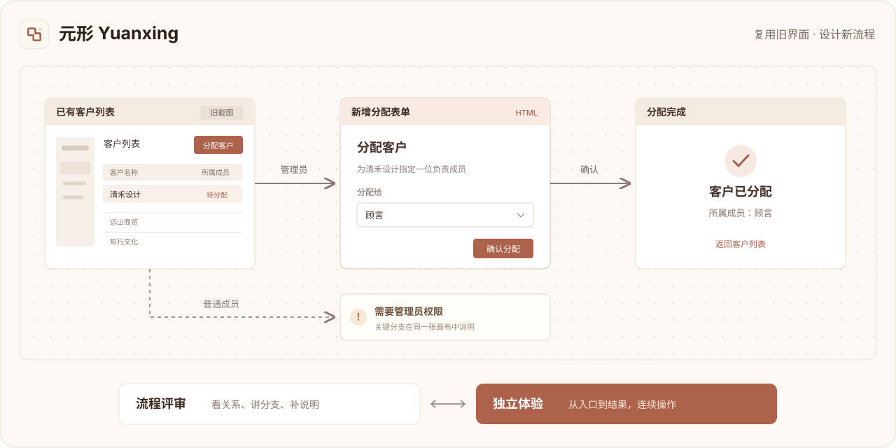

评审入口和分支
把页面关系、操作条件和说明放到一张画布上。可以拖动整理、连接流程，在具体位置打点批注。
打开流程画布 →给 AI 助手用的开源原型 Skill
把想法、截图或已有页面交给 AI，让它制作和修改原型。
你在本地工作台体验、整理和评审，需要分享时再导出单个 HTML。
安装到现有 AI 助手 · 配套本地可编辑工作台 · MIT 开源

从第一次使用到团队评审
元形由 Skill 和本地工作台组成。AI 负责生成与修改，工作台负责查看、体验和直接编辑；没有完整 PRD，也可以从一个具体改动开始。
使用能读写本地文件、运行命令的 AI 助手，准备 Node.js 20+。复制安装话术，让 AI 完成安装并确认可以使用。
提供需求、截图或已有 HTML，说明目标、改动范围和项目保存位置。可以新建产品，也可以只改现有页面的一处功能。
AI 生成页面、连接主流程，启动或复用本地工作台并给出入口。首次启动会打开浏览器，后续修改复用已有工作台；关掉页面后，可以让 AI 重新打开。
在工作台拖动页面、编辑说明或加批注，要改页面与交互则回到 AI 对话说；批注不会自动执行。AI 改完后先切回流程画布加载变化，再进入完整原型体验。
让 AI 用现有原型组织流程画布和需求文档。已有 Markdown 可以引用原章节；先讲清主流程，再逐步补充已确定的细节。
导出一个自包含 HTML，选择打开时先看画布、需求文档还是完整原型；文件中仍可切换三个视图。同事用浏览器打开即可，反馈后继续改原项目，再按需导出新版。
使用元形。基于我提供的客户列表截图，增加“分配客户”：管理员选择负责成员，确认后查看结果。只改这段流程，项目保存到“客户分配原型”目录，做完打开工作台。
继续修改“客户分配原型”。把单选成员改成多选，确认页展示选中的成员，其他页面和我调整过的画布位置保留。
换一个对话继续时，给 AI 同一个项目目录。原型、流程与说明都留在这个项目里，可以接着修改。
还没安装？先完成第一步 →看一个做好的案例
保留旧列表截图，用 HTML 补上新表单和结果页，再把不同角色的路径接起来。下面的在线示例可以直接操作。
点击列表截图中的“分配客户”。旧界面保持原样。
选择负责成员，确认分配。新增部分使用 HTML。
结果页展示刚才选择的成员，完成这一段用户流程。
案例界面与数据均为虚构示例。
先完成安装
准备一个能读写本地文件、运行命令的 AI 助手，以及 Node.js 20+。元形使用你现有的模型服务，无需另配元形专用 API Key。
请安装 https://github.com/JasperLin2333/yuanxing 中的元形 Skill。先阅读 SKILL.md，按当前 AI 助手的 Skill 目录规范安装，保留完整运行时与资源。检查 Node.js 20+、文件读写和命令执行能力，并确认当前对话能使用元形；安装完成后告诉我。
回到 AI 对话，提供需求和材料，告诉它项目保存到哪里。AI 会按你的范围制作原型，给出本地工作台入口。
如果已有项目，直接提供项目目录，说明本次要改的页面或功能即可。
查看完整使用流程 →查看 README 安装说明 →下载 Skill 安装包 →这里提供在线示例。制作自己的项目时，在现有 AI 助手中安装元形并提出需求；项目保存在你选择的本地目录，工作台在本机浏览器中打开。
可以。先给目标、已有材料和本次范围，让 AI 做出主流程。看过原型后继续补充和修改，需要评审时再整理已确定的规则。
可以。AI 为截图设置点击热点，为 HTML 绑定控件跳转。已有界面可以保留为截图，新增操作再使用可交互页面。
导出一个 HTML 文件，同事在浏览器打开即可体验，并切换画布、需求文档和完整原型。离线文件保留导出时的内容；反馈后继续修改源项目，再导出新版。
批注用于说明和评审。要落实改动，回到 AI 对话说明要处理哪些反馈；你也可以直接在工作台中修改布局、说明和需求文字。
可以从文字需求开始，也能复用 PNG、JPEG、WebP 截图，以及自包含 HTML、本地 CSS、图片和普通 JavaScript。框架工程、外部 CDN、真实登录和网络接口需要先适配。查看项目格式。
从一个具体改动开始